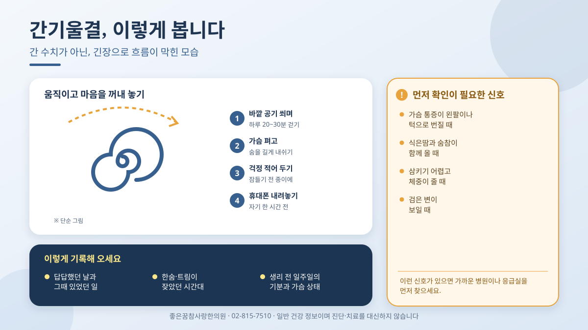

이종호 한의사 감수좋은꿈참사랑한의원 대표원장 (한의사 면허번호 19769)발행 2026-11-26 · 수정 2026-11-26
이 글의 차례
회의를 마치고 자리에 앉으면 가슴 한가운데가 꽉 막힌 듯 답답하고, 저도 모르게 긴 한숨이 나온다는 분이 계십니다. 목에는 무언가 걸린 것 같은데 뱉어도 삼켜도 나오지 않고, 옆구리는 뻐근하며, 밥을 먹으면 명치에 얹힌 듯하다고 하십니다. 신경 쓰는 일이 많을수록 더 심해진다고요.
진찰을 마치고 "긴장으로 기운의 흐름이 막혀 있는 모습이에요. 한의학에서는 간기울결이라고 부릅니다"라고 말씀드리면, 열에 아홉은 이렇게 되물으십니다. "간이요? 제 간이 나쁘다는 건가요? 건강검진에서 간 수치는 괜찮았는데요."
먼저 분명히 말씀드리겠습니다. 간기울결은 병명이 아닙니다. 간 수치나 초음파로 확인하는 간 질환을 뜻하는 말도 아닙니다. 한의학에서 오랫동안 몸과 마음의 상태를 묘사할 때 써 온 전통적인 표현이고, 진찰에서 본 여러 모습을 묶어 설명하는 말입니다.
이 글에서는 간기울결이라는 말이 어떤 모습을 가리키는지, 왜 여기에 간이라는 글자가 들어가는지, 진료실에서 무엇을 보고 이 설명을 쓰는지, 먼저 확인할 것은 무엇인지, 그리고 생활에서 막힌 흐름을 풀어 주는 습관은 어떻게 챙기면 좋은지를 차례로 말씀드리겠습니다.
간기울결은 어떤 몸 상태를 말하나요?
한의학에서 말하는 간은 해부학의 간 장기와 꼭 같은 것이 아닙니다. 옛 문헌에서는 간이 몸 전체의 기운이 막힘없이 고르게 퍼지도록 풀어 주는 역할을 한다고 설명해 왔습니다. 나뭇가지가 사방으로 뻗듯 기운을 시원하게 펴 주는 일을 간의 몫으로 본 것입니다.
울결은 막히고 뭉쳤다는 뜻입니다. 그래서 간기울결은 기운을 펴 주는 흐름이 막혀 한곳에 뭉친 모습을 말합니다. 마음이 답답하면 가슴이 막힌 듯하고, 한숨으로라도 풀어내려 하고, 옆구리와 명치가 뻐근해지는 모습을 떠올리시면 가깝습니다.
옛사람들은 감정이 막히면 몸의 흐름도 막힌다고 보았습니다. 화가 나도 참고, 걱정을 속으로 삭이고, 하고 싶은 말을 삼키는 일이 쌓이면 기운의 흐름이 뭉친다고 설명했습니다. 마음과 몸을 따로 떼어 보지 않는 한의학의 시선이 이 말에 담겨 있습니다.
이 말도 사람에게 붙이는 딱지가 아닙니다. 업무가 몰린 시기, 가족 문제로 마음이 무거운 시기, 이직이나 이사처럼 큰 변화가 있는 시기에 이런 모습이 짙어졌다가 상황이 정리되면 옅어지기도 합니다. 지금 이 시기의 몸과 마음을 묘사하는 말로 이해해 주시면 됩니다.
왜 스트레스가 기운을 막는다고 보나요
한의학에서는 기운이 막힘없이 돌아야 소화도 잘 되고, 잠도 깊고, 생리도 고르다고 설명해 왔습니다. 긴장과 억눌린 감정은 이 흐름을 움츠러들게 하고, 흐름이 막히면 가장 먼저 가슴과 옆구리, 명치처럼 기운이 지나가는 길목이 답답해진다고 봅니다.
생활에서 흔히 보는 이유는 이렇습니다.
- 업무 압박이나 대인 관계에서 오는 오랜 긴장
- 화나 서운함을 표현하지 못하고 속으로 삭이는 습관
- 쉬는 시간 없이 이어지는 일정
- 운동이나 바깥 활동이 거의 없는 생활
- 늦은 밤까지 휴대폰을 보며 머리를 쉬지 못하는 습관
- 이사, 이직, 이별처럼 큰 변화가 겹친 시기
움직임이 적은 생활도 자주 이야기됩니다. 몸을 움직이면 기운도 함께 돈다고 보기 때문에, 답답할수록 앉아만 있으면 흐름이 더 막힌다고 설명합니다. 실제로 산책을 하고 나면 가슴이 한결 트인다고 말씀하시는 분이 많습니다.
계절로는 봄에 이런 모습이 짙어진다고 말씀하시는 분이 많습니다. 옛 문헌에서도 봄을 간의 계절로 보아 예민함과 답답함이 쉽게 드러난다고 설명해 왔습니다. 새 학기, 새 업무처럼 변화가 많은 시기와도 겹칩니다.
현대 의학으로 보면 이런 모습 뒤에 자율신경의 긴장, 불안이나 우울, 역류성 식도염, 기능성 소화불량, 긴장성 두통, 생리 전 증후군 같은 이유가 숨어 있을 수 있습니다. 그래서 간기울결이라는 설명을 드리더라도 필요하면 병원 검사나 상담을 함께 권해 드립니다.
진맥·설진·문진에서는 무엇을 함께 보나요
진맥에서는 맥의 긴장도를 봅니다. 간기울결에 가까운 분은 손끝에서 기타 줄을 누른 듯 팽팽하고 곧게 잡히는 맥을 보이는 경우가 많습니다. 다만 진료실에 오신 것만으로도 긴장해 맥이 팽팽해질 수 있어서, 잠시 이야기를 나누며 마음이 풀린 뒤에 다시 짚어 보기도 합니다.
설진에서는 혀의 가장자리를 봅니다. 혀 양옆이 붉거나 붉은 점이 돋아 있는 모습을 간기울결과 연결해 설명해 왔습니다. 혀 가운데 설태가 두껍다면 소화의 막힘이 함께 있는지도 봅니다. 혀만으로 정하지 않고 다른 단서와 함께 봅니다.
문진에서는 답답함이 감정이나 상황에 따라 달라지는지, 한숨과 트림이 잦은지, 목에 무언가 걸린 느낌이 있는지, 옆구리가 뻐근한지, 신경 쓰면 소화가 막히는지, 짜증이 늘었는지, 생리 전에 가슴이 붓고 예민해지는지를 여쭙니다. 이런 대답이 맥과 혀와 같은 쪽을 가리킬 때 간기울결이라는 설명을 조심스럽게 붙입니다.
세 가지는 서로를 확인하는 장치입니다. 맥이 팽팽해도 생활에서 답답함이 없다면 간기울결이라고 말씀드리지 않습니다. 반대로 맥이 뚜렷하지 않아도 감정에 따라 가슴과 소화가 함께 흔들리는 모습이 이어지면 그 흐름을 더 깊이 살펴봅니다.
생활에서 흔히 느끼는 모습
간기울결이라는 설명을 들으시는 분들이 흔히 말씀하시는 모습은 이렇습니다. 몇 가지가 겹쳐 오래 이어지는지가 중요합니다.
- 가슴이 꽉 막힌 듯 답답하고 한숨이 자주 나온다
- 목에 무언가 걸린 듯하지만 뱉어도 삼켜도 그대로다
- 옆구리나 명치가 뻐근하고 트림이 잦다
- 신경 쓰는 일이 있으면 소화가 막히고 입맛이 없다
- 작은 일에도 짜증이 나고 예민해진다
- 생리 전에 가슴이 붓고 아프며 기분이 크게 흔들린다
이런 모습은 힘든 하루를 보낸 뒤 잠깐 답답한 것과는 다릅니다. 몇 주씩 이어지고, 감정의 흐름에 따라 몸의 불편이 함께 오르내린다면 기록해 두시면 좋습니다.
비슷해 보이지만 다르게 살피는 것
가슴 답답함은 심장과 폐를 먼저 생각해야 합니다. 계단을 오를 때 가슴이 조이거나 숨이 차고, 쉬면 나아지는 패턴이라면 심장 검사를 먼저 받아 보시길 권합니다. 감정과 상관없이 몸을 쓸 때 답답하다면 특히 그렇습니다.
목의 이물감도 나눠 봅니다. 신물이 올라오고 가슴이 쓰리며 아침에 목이 쉬어 있다면 역류성 식도염일 수 있고, 목 앞쪽에 멍울이 만져진다면 갑상선을 확인해야 합니다. 음식을 삼키기 어렵다면 내시경 같은 검사가 먼저입니다.
마음이 오래 가라앉은 것과도 구분합니다. 2주 넘게 즐거운 일이 없고, 잠과 입맛이 크게 흔들리며, 아무것도 하기 싫은 날이 이어진다면 우울감을 함께 살펴야 합니다. 걱정이 꼬리를 물고 멈추지 않는다면 불안을 함께 봅니다. 이때는 정신건강의학과 상담을 함께 권해 드립니다.
간 수치와는 다른 이야기입니다. 건강검진에서 간 수치가 높게 나왔다면 그것은 내과에서 따로 살펴야 할 일이고, 간기울결이라는 설명과는 별개입니다. 반대로 간기울결이라는 말을 들었다고 간 검사를 새로 받으실 필요는 없습니다.
스스로 점검해 볼 것
집에서 내 몸과 마음을 돌아보는 질문입니다. 진료실에서 이야기할 거리를 모은다고 생각해 주세요.
- 답답함이 심해지는 상황이나 사람, 시간대가 있나요?
- 하루에 한숨을 몇 번쯤 쉬는지 느껴지시나요?
- 최근 화나 서운함을 말하지 못하고 넘긴 일이 있나요?
- 하루에 몸을 움직이거나 바깥 공기를 쐬는 시간은 얼마나 되나요?
- 잠들기 전 머릿속이 일 생각으로 가득한 날이 일주일에 며칠인가요?
질문에 답하다 보면 흐름이 막히는 자리가 보이기 시작합니다. 일의 압박이 먼저인지, 표현하지 못한 감정이 먼저인지, 움직임 부족이 먼저인지에 따라 생활에서 먼저 손볼 곳이 달라집니다.
먼저 이렇게 여쭙니다
- 답답함은 언제부터, 어떤 상황에서 심해지나요?
- 가슴, 목, 옆구리, 명치 가운데 어디가 가장 불편한가요?
- 소화, 트림, 대변은 어떤가요?
- 잠들기 어렵거나 자주 깨나요?
- 생리 전 변화가 있나요? 임신 중이거나 가능성이 있나요?
- 드시는 약이나 영양제, 정신건강의학과 약이 있나요?
일상에서 먼저 해 볼 수 있는 것
막힌 흐름을 푸는 일은 몸을 움직이고 마음을 꺼내 놓는 데서 시작합니다. 아래 가운데 지금 가장 쉬운 하나부터 골라 보세요.
- 하루 20~30분, 바깥 공기를 쐬며 걷기
- 답답할 때 자리에서 일어나 가슴을 펴고 숨을 길게 내쉬기
- 하고 싶은 말이나 걱정을 짧게라도 종이에 적어 내려놓기
- 믿을 수 있는 사람과 이야기 나누는 시간 갖기
- 식사는 쫓기지 않게 천천히, 화가 난 직후에는 조금 쉬었다 먹기
- 잠들기 한 시간 전에는 업무 메시지와 휴대폰 내려놓기
걷기는 몸과 마음을 함께 푸는 가장 쉬운 방법입니다. 팔을 크게 흔들며 조금 빠르게 걸으면 가슴이 펴지고 숨이 깊어집니다. 점심시간 10분이라도 건물 밖으로 나가 보세요.
숨은 들이쉬는 것보다 내쉬는 것이 중요합니다. 넷을 세며 들이쉬고 여섯을 세며 내쉬는 호흡을 다섯 번만 해도, 올라갔던 어깨가 내려가고 가슴이 조금 트이는 느낌을 받으실 수 있습니다.
술로 답답함을 풀려는 분이 계신데, 잠시 풀리는 듯해도 잠이 얕아지고 다음 날 더 무거워지기 쉽습니다. 카페인도 긴장을 높일 수 있으니 오후에는 줄여 보세요.
감정을 꺼내 놓는 연습도 필요합니다. 모든 것을 참는 것이 어른스러운 것은 아닙니다. 서운한 일은 가능한 범위에서 담담하게 말로 전하고, 말하기 어려운 일은 글로라도 적어 보세요. 막힌 것을 조금씩 흘려보내는 일이 몸의 흐름에도 닿는다고 봅니다.
한의원에서 함께 살필 수 있는 경우
- 검사는 괜찮다는데 가슴 답답함과 한숨이 이어지는 경우
- 신경 쓰면 소화가 막히고 트림과 명치 답답함이 생기는 경우
- 목에 무언가 걸린 느낌이 있는데 이비인후과나 내시경 검사는 괜찮은 경우
- 생리 전마다 가슴이 붓고 예민해지며 두통이 오는 경우
좋은꿈참사랑한의원에서는 진맥과 설진, 문진을 마친 뒤 지금의 모습을 쉬운 말로 먼저 설명드립니다. 간기울결이라는 말을 쓰더라도 그것이 일의 긴장, 표현하지 못한 감정, 움직임 부족 가운데 무엇과 이어지는지를 함께 말씀드립니다.
진찰한 내용에 따라 침, 생활 조정, 한약 상담 가운데 지금 상태에 맞는 것을 정합니다. 한약을 상의할 때는 드시는 약, 특히 정신건강의학과 약과 영양제를 모두 확인하고 신중하게 정합니다. 임신 중이거나 가능성이 있다면 먼저 알려 주시고 산부인과 선생님과도 상의해 주세요.
정신건강의학과나 내과에서 처방받은 약은 상의 없이 멈추지 않고 그대로 이어 가시면 됩니다. 한의원 진료는 그 곁에서 몸의 답답함과 생활의 흐름을 함께 살핀다고 생각해 주세요.
이렇게 기록해 오시면 상담이 쉬워집니다
- 답답함이 심했던 날과 그때 있었던 일
- 한숨, 트림, 목 이물감이 잦았던 시간대
- 소화가 막힌 날과 그 전에 신경 쓴 일
- 걸은 시간이나 바깥에 나간 날
- 생리 시작일과 그 전 일주일의 기분, 가슴 상태
2주 정도 적어 보시면 몸의 불편과 마음의 흐름 사이의 연결이 보이기 시작합니다. 빈칸이 있어도 괜찮으니 편하게 적어 주세요.
간기울결이라는 말을 들으셨다면
간기울결은 몸이 '마음이 막혀 있으니 숨 쉴 틈을 달라'고 보내는 신호를 한의학의 말로 옮긴 것이라고 생각해 주세요. 간이 나쁘다는 무서운 진단이 아니라, 긴장과 쉼, 참는 것과 꺼내 놓는 것의 균형을 돌아보자는 제안입니다.
이번 주에는 점심시간 10분 걷기, 잠들기 전 걱정 적어 내려놓기 가운데 하나만 골라 보세요. 다음에 오시면 맥을 다시 짚으면서 그 사이 몸과 마음이 어떻게 움직였는지 함께 살펴보겠습니다.
이런 증상은 먼저 확인이 필요합니다
- 가슴을 쥐어짜는 통증이 왼팔이나 턱으로 번지거나 식은땀과 숨참이 함께 오는 경우
- 음식을 삼키기 어렵고 체중이 이유 없이 줄거나 검은 변이 보이는 경우
이런 신호가 있으면 한의원보다 가까운 병원이나 응급실을 먼저 찾으세요.
마음이 너무 힘들어 스스로를 해치고 싶은 생각이 든다면 자살예방상담전화 ☎ 109로 바로 연락해 주세요.
함께 읽으면 좋은 글
- 가슴이 꽉 막힌 듯 답답하고 한숨이 자꾸 나오는 흉민은 어떻게 살피나요?
- 생리 전마다 가슴이 붓고 아픈 유방통은 어떻게 살피고, 언제 검사를 받아야 하나요?
- 명치가 아프거나 꽉 막힌 듯 답답할 때는 무엇을 나눠 살피나요?
- 걱정이 꼬리를 물고 멈추지 않는 범불안(불안장애)은 어떻게 살피나요?
- 스트레스를 받으면 뒷목이 당기고 머리가 아픈 긴장성 두통은 어떻게 살피나요?

여쭙는 것
- 답답함은 언제부터, 어떤 상황에서 심해지나요?
- 가슴, 목, 옆구리, 명치 가운데 어디가 가장 불편한가요?
- 소화, 트림, 대변은 어떤가요?
생활에서 해 볼 것
- 하루 20~30분, 바깥 공기를 쐬며 걷기
- 답답할 때 자리에서 일어나 가슴을 펴고 숨을 길게 내쉬기
- 하고 싶은 말이나 걱정을 짧게라도 종이에 적어 내려놓기
한의원에서 함께 살필 것
- 검사는 괜찮다는데 가슴 답답함과 한숨이 이어지는 경우
- 신경 쓰면 소화가 막히고 트림과 명치 답답함이 생기는 경우
- 목에 무언가 걸린 느낌이 있는데 이비인후과나 내시경 검사는 괜찮은 경우
먼저 확인이 필요한 신호
- 가슴을 쥐어짜는 통증이 왼팔이나 턱으로 번지거나 식은땀과 숨참이 함께 오는 경우
- 음식을 삼키기 어렵고 체중이 이유 없이 줄거나 검은 변이 보이는 경우
한눈에 보는 표
| 구분 | 핵심 |
|---|---|
| 여쭙는 것 | 답답함은 언제부터, 어떤 상황에서 심해지나요? 가슴, 목, 옆구리, 명치 가운데 어디가 가장 불편한가요? |
| 생활에서 해 볼 것 | 하루 20~30분, 바깥 공기를 쐬며 걷기 답답할 때 자리에서 일어나 가슴을 펴고 숨을 길게 내쉬기 |
| 한의원에서 함께 살필 것 | 검사는 괜찮다는데 가슴 답답함과 한숨이 이어지는 경우 신경 쓰면 소화가 막히고 트림과 명치 답답함이 생기는 경우 |
| 먼저 확인이 필요한 신호 | 가슴을 쥐어짜는 통증이 왼팔이나 턱으로 번지거나 식은땀과 숨참이 함께 오는 경우 음식을 삼키기 어렵고 체중이 이유 없이 줄거나 검은 변이 보이는 경우 |
자주 묻는 질문
간기울결이라고 하면 간이 나쁘다는 뜻인가요?
그렇지 않습니다. 한의학에서 말하는 간은 기운을 고르게 펴 주는 역할을 아우르는 말이라 간 장기의 수치와는 다릅니다. 간기울결은 긴장으로 기운의 흐름이 막힌 모습을 전통적으로 묘사하는 말이고, 간 수치는 내과에서 따로 살핍니다.
간기울결은 화병과 같은 말인가요?
겹치는 부분이 있지만 같은 말은 아닙니다. 화병은 억눌린 감정이 쌓여 가슴 답답함과 열감 등이 오래 이어지는 상태를 말하고, 간기울결은 그보다 넓게 기운의 흐름이 막힌 여러 모습을 설명할 때 씁니다.
목에 무언가 걸린 느낌이 계속되는데 괜찮은 건가요?
긴장할 때 목이 막힌 듯한 느낌은 흔하지만, 역류성 식도염이나 갑상선 문제와도 구분이 필요합니다. 음식을 삼키기 어렵거나 목에 멍울이 만져진다면 병원 검사를 먼저 받아 보세요.
마음 상담과 한의원 진료를 함께 받아도 되나요?
함께 받으셔도 됩니다. 정신건강의학과 상담과 약은 그대로 이어 가시고, 드시는 약을 알려 주시면 한의원에서는 몸의 답답함과 잠, 소화를 함께 살핍니다.
좋은꿈참사랑한의원은 재진 때 지난번 이야기부터 이어서 여쭙니다. 진료시간과 예약은 오시는 길에서 확인하세요.
어디서 상담받을 수 있나요?
좋은꿈참사랑한의원은 서울 동작구 만양로2길 2 신성빌딩 3층·5층(서울 동작구 상도동, 7호선 상도역 3번 출구 근처)에 있습니다. 한의사 3명(이종호 대표원장, 조영기 수석진료원장, 정원영 진료원장)이 진료합니다. 진료시간은 평일 09:30~20:00(점심 13:00~14:00), 토·일·공휴일 09:30~15:00이며, 방문 전 전화로 확인을 권합니다. 예약은 네이버 예약, 카카오톡 상담, 전화 02-815-7510로 받습니다.
이 글은 일반적인 건강 정보이며 개인의 진단이나 치료를 대신하지 않습니다. 증상이 있거나 복용 중인 약이 있다면 진료를 통해 확인하세요. 치료 효과는 개인마다 다를 수 있습니다.
작성 기준: 일반적으로 알려져 있는 건강 정보를 참고해 정리했습니다(대표원장 감수). 증상 기록은 1~2주 동안 하루 1회, 비슷한 시간에 적어 오시면 지난 상태와 비교하기 쉽습니다.